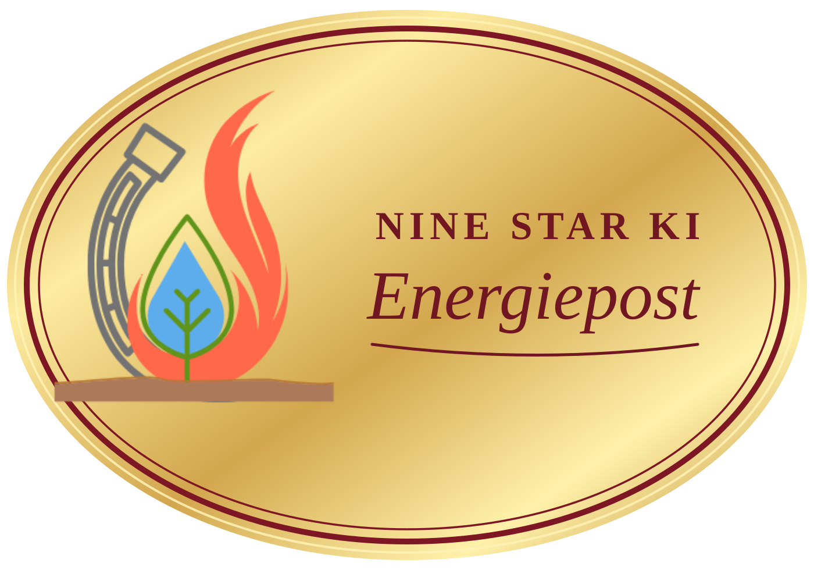
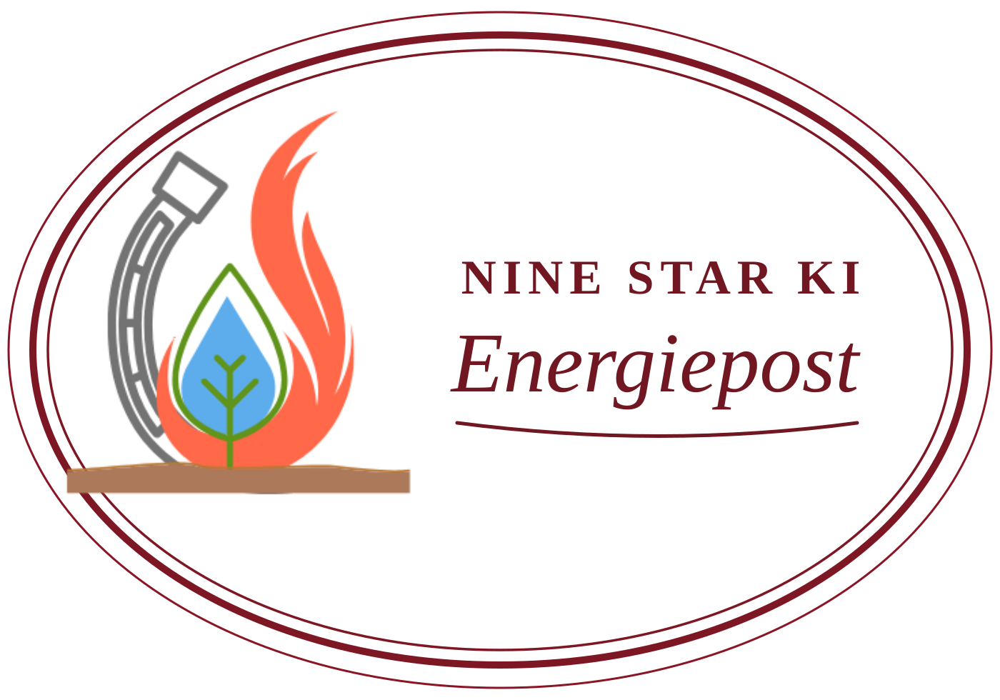

Nine Star Ki Energiepost
De originele afbeelding van je vlam-, druppel- en metaal-logo staat ongewijzigd op deze ovale sticker.
Gouden sticker · 50 × 35 mm

PNG op 2400 × 1680 pixels, bedoeld als hoog-resolutie upload voor Temu. Het goud is een afbeeldingseffect, geen echte metallic inkt.Voor echte metallic-goudstickers

Alleen geschikt als de leverancier daadwerkelijk metallic goudpapier gebruikt. Vraag de drukker eerst of dit formaat en deze bedrukking worden ondersteund.Bij een rechthoekig Temu-uploadvlak moet je controleren of de verkoper echt ovaal snijdt. De afbeelding alleen bepaalt de snijvorm niet.